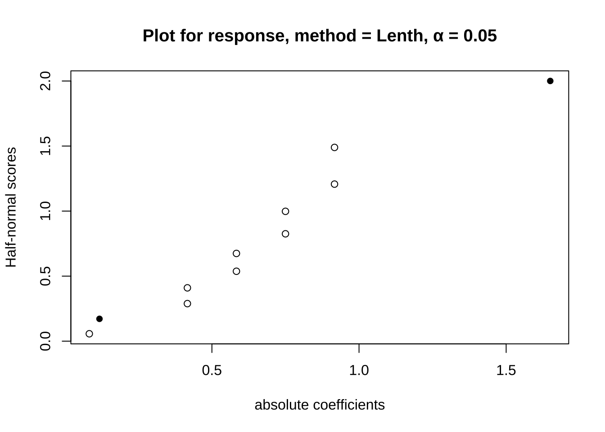

坑 5 实验
有了思维工具就可以进行实验了。实验的基本任务包括描述现象、推断机理与预测验证。描述性实验或者说观察研究也是需要设计才能回答科学问题的，机理或验证实验则必须通过随机化与控制变量来设计。当科学发展到实验科学年代，统计学就要去解决刻意观察获得规律的方法。这里面随机化是一个核心观念，用来确保除了你关心的变量，其余的都能随机或符合某个分布。1874在《科学原则》这本书里首次提到了控制变量法，一次测一个。但在统计学大放异彩的20世纪，Fisher 认为一次回答一个问题是错的，因为自然问题从来都是复杂的不能只回答一个，提出了加性模型。这里统计学要为复杂现象提供合理的设计工具，时至今日，在数据概念满天飞的时代数据收集似乎不是问题，很多人就会说更重要的是提出问题。这倒没错，但如果没有统计学思维加持，很多问题是无法对应实际数据的，如果设计不当或有偏，拿到的现象就会产生误导。
不能为了设计实验而设计实验。例如，George Box 在《Statistics for experimenters》的第一章里是没有扯什么随机化、均匀性的，而是聊了下认识论。开篇第一句就是“知识就是力量”，解决问题实际就是一个认识模型演进的过程。具体来说是一个归纳-演绎不断往复的过程，数据起了中介作用。例如下面这个认识过程：
（模型）每天都一样
（演绎）今天车会停在原位
（数据）车不在
（归纳）有人偷车
（模型）车丢了
（演绎）车不在原位
（数据）车又回来了
（归纳）有人偷了车还回来了
具体到实验，这个过程就成了（模型）想法 ->（演绎）实验设计 ->（数据）结果分析 ->（归纳）结论或新想法。这大概是实验设计能上升到的最高理论高度了。不过，实验涉及的测量与分析方法对于科研提供经验事实非常重要，经常扮演理论的试金石，现代科研离不开实验结果支撑，且向自动化、模块化、定量化发展。实验学科的科研人员不必对工程技术细节完全掌握，但必须清楚其中测量原理与简单的故障诊断，否则实验就会黑箱化。
5.1 思想实验
这是科学实验里非常特殊的一种，通过预设场景进行推演得到结论。常见于物理学，但其他学科也有。有些思想实验是无法在真实世界操作的，例如拉普拉斯妖，有些则是可操作但技术或成本现阶段不经济，例如戴森球，还有些曾经是思想实验后来真的做出来的例如图灵测试。思想实验通常会引导出一个悖论或反直觉的现象，但这里的悖论是跟普通人的知识水平有关的，有些现象悖论确实就是事实，例如光的波粒二象性。
这里讨论下跟现代科研有关的几个思想实验。在中文房间的思想实验之中，我们假定一个完全不懂中文只懂英语的人被关在一个小屋里，里面有一本英文手册，里面用英文记录了一些汉字处理规则但没有说这是汉字，只是一些图像转换关系，此时外面一个懂汉语的在纸上写了一个汉语问题送到这个房间里，里面那个人根据英文手册把答复画出来（其实是中文）送出去，门外的人看到会以为里面有个懂中文的人，不过事实上里面那位都不知道自己画的是中文。这个思想实验跟图灵测试类似，都是人工智能里的经典命题，当手册换成程序，不懂中文的人换成计算机或服务器，我们能否说通过了图灵测试的机器具备了智能或者“知道”了一些事？有问有答是表面上的“知道”，但如果没有进一步提问，那么我们事实上无法区分“知道”的质量。
其实，从现代社会视角，“知道”的质量很多时候无关紧要。在现代教育体系中，培养的多数人才包括高等教育在内是机械化工具化的，其知识的应用程度很多时候就是有问有答即可。思想的深度并不是现代社会运转的必需品，很多时候还属于危险品。特别在分工体系里，在生理寿命与精力限制下个人事实上也不太可能“知道”太多，很多行业仅仅做到表面“知道”都很不容易了。我们的学习过程大都是构建在前人成果或结论而不是思考之上的，为了掌握知识迎合认知教育过程会省略过程直接给结论，或者在事后用漂亮的叙事逻辑线索串起来，但这样的后果就是我们需要掌握的知识越来越多但知识间产生联系的思想火花大都被掩盖了。分工前期有多促进效率，后期就有多降低效率，跨学科交流成本会因为分工制造的术语墙变得越来越高，而很多行业黑话本可以很直白的描述，甚至很多是从别的学科借过来的隐喻。
这对科研行业而言副作用非常大。现在实验学科发文章都需要用到统计学知识，但很多研究人员根本就没有理解统计概念而仅仅就是知道一个决策方法，例如p值小、R方高就是好之类，更不用说还有一批研究人员连好坏的判断标准都没有。但这其实不妨碍他们成为现代科研产业的从业人员，很多人只需要机械的进行实验然后把结果传给下一个只会数据分析的人生成一份几百页的报告就可以了，当然读报告的决策人员其实也只会去看看摘要里的p值跟R方。这套程序化操作倒是给后续检查留下了充足的材料，只是这些材料可能永远都没人读。那问题来了，这套程序究竟是给谁看的？超生命体？在现代社会的信仰者眼中，这是先进跟完备的体现，超越了人性的存在并忠实记录了发生的事，但可能真相是这样运转的行业能发工资养家糊口且权责清晰，哪怕根本解决不了科学问题。
其实关于这个“知道”问题哲学家也有定义，也就是所谓的JTB理论，认为A知道B的知识有三个要素，第一个是B本身为真，第二个是A相信B是真，第三个是A相信B为真这事是得到证实的。逻辑上看起来也似乎没啥问题，例如上面那个中文房间实验中只满足了后面两个，但不满足B本身为真这个条件。不过发表这个论文的哲学家当场就给了反例的思想实验，简化版就是A跟B竞争一个职位并两人同时买了彩票，A某天听上司说职位给了B，而且由于B学历高经验丰富A也相信了，但同时A听说B中了彩票，A就知道：得到职位的人中彩票了，但事实却是A的彩票也中奖了他还不知道。这里A知道的事满足知道三要素，但却是不全面的“知道”，不能形成知识。
要我说哲学家搞这么啰嗦还不如去看下斯金纳的迷信鸽子实验，实验人员设定一个隔十五秒就出食的喂食器喂鸽子，然后过了几天后发现，当喂食器不出食物的时候，有的鸽子原地打转、有的撞墙、有的摇头…鸽子们形成了一种只要做一件事15秒就有饭吃的迷信，也就是鸽子版的“知道”实验。鸽子的学习过程也满足三要素：摇头就有食物落下、鸽子相信这事、鸽子相信这事被实验证实，但实验人员好比上帝视角，会发现这种“知道”完全不靠谱。没有上帝视角的因果关系可能有用但跟真相可能差了十万八千里。
很多学科构建术语墙，用特定的生僻词来描述一个本可以形象描述的概念，用词本身的少见多怪来构建自己的专业性，但专业性需要的不仅仅是表面上的高深，而是真的知道。在科幻小说《基地》里，衰落的帝国的动力装置还有所谓的工程师在维护，但此时的工程师已经完全不知道装置运行的原理，仅仅是通过职位的专业性来维护自己的权威。如果有一天人类文明出现了衰退，那么知识精英的术语墙一定是其中的重要因素。
另一个重要的思想实验是无知之幕。所谓无知之幕，就是说你永远不知道下一个受害人是谁，因此保护措施就一定要按照下一个受害人是自己或自己的亲朋好友来设计。规则下的自由自由度最高，无序的自由一定造成意见割裂与对立。不过很多人也会去争论度的问题，如果搞不清度的把握，你可以问啊。什么都不说就按照自己的自由度聊天是不成熟的表现，尊重别人也会给自己赢得自由空间。现代科研体系里依然保留有导师-学生的等级制度，这使得导师与学生间的关系处理经常比较微妙，很多导师长于科研但弱于同理心，可能出现导师或学生一面倒只考虑自己然后两败俱伤的结局。无知之幕这样的规则设计原则尽最大可能考虑未来而不仅仅是眼下的公平，这对很多实验设计与科研思路也有启发，也就是通过更多的随机选择来避免研究上的有的放矢。
不过，信息时代无知之幕的现实基础正在被技术进步破坏。很多时候，有些人是知道自己不会成为受害者才肆无忌惮地争取利益。例如商品的差异定价，如果商家对你特别了解，它不会给你那个充分竞争的最低价，而是会根据你的消费水平推断出你能承受的最高价来维持自己的最高利润。而且你很有可能完全无法发现，这也是你在固定消费模式后决定的。个性化推荐的背后有着巨大的套利空间，此时游戏规则设计里如不考虑无知之幕或者通过技术与数据追踪突破了无知之幕，那么每个人将可能面临一个看似合理但实际被奴役的未来。在这样的空间里你的价值将被榨取到最后一滴而不自知，很多人则可能面临被侵害但上诉无门或彻底被主流声音所抛弃的境遇。对未来的无知是公平的最后一道保护伞，突破了这个，利益冲突就实质上成了社会伦理问题，这个时候有些人会成为社会的永恒弃子与棋子。但技术也可以用来巩固无知之幕，虽然事实公平很难保证，但起码在社会运行中，原则上给所有人公平自由的制度。
20世纪的技术进步是普惠的，21世纪的技术进步是优先照顾少数人的，因为技术研发成本越来越高。这就是那个挤公交问题，先上车的人上车后其实并不愿与后面上车的人均摊利益，有的恨不得把车门焊死来维护独占的利益。同时，最新技术造成的不平等也会越来越大，当一项技术无法从成本与资源上实现普惠时，社会割裂的可能性就很大了。所以，技术开发是要讲伦理的，优先开发普惠技术并在制度建设中维护无知之幕，否则弱肉强食的丛林法则会最终吞噬掉人类文明的基础。
了解思想实验最大的意义在于开拓眼界并学会悖论式思考，也就是通过形象化概念把一些规律性的矛盾展示出来。很多思想实验实际上是哲学家提出来的，思考这些实验可能也得不出什么唯一的结论，但这种不确定性的答案却是科学家面对科学问题经常需要给出的，思想实验对于训练科学家思辨能力很有帮助。
5.2 仿真实验
相比于思想实验纯粹的逻辑规律演绎，仿真实验则更多用于系统考察现象或考察系统特性。仿真实验的基础在于预定义个体或部分的属性与行为规则，然后在整体层面上观察现象。仿真实验的科研应用场景有两个：计算机辅助设计（CAD）与个体为本模型（ABM），前者更多用在工科研究中，例如工程力学上会通过建筑物建模来考察承重建材选择等问题，特别是没有解析解需要数值求解的问题，因为是计算机模拟，可以采集很多极端条件下系统承载参数；后者则更多出现在复杂性科学研究中，特别是博弈论与系统动力学考察，例如研究生态学种群变化规律就可以通过定义捕食规则与寿命，然后初始化一条食物链来研究系统的物质能量流动，例如生物圈二号。
仿真实验的三大基础是科学计算、机理与统计学。科学计算能力提升可以同时考察更多参数，更好模拟真实场景。新机理的提出与验证是多数仿真实验的目的，而已知机理的仿真则是模型的基础。统计学是仿真实验得到结论的工具，统计模拟可以帮助在未知规律的前提下展示提炼规律。相应的，仿真实验设计也要对科学问题的可计算性、原理与统计观测指标有清晰定义。
当前仿真实验的大趋势是虚拟化，越来越多的实验现在可以在计算机上模拟，小到分子动力学过程，大到谣言的网络传播机制都可以建模仿真。有机理则预设机理，机理不清楚就通过统计规律来揭示。越是接近真实的模拟，计算量与未知参量就越多，对经验公式与观察反馈也越高，甚至很多人认为人类就活在仿真程序里。
5.3 观察实验
观察实验是科学实验早期的主要形式，用无干涉观察来归纳总结规律，现在在社会科学或涉及人与伦理问题的科研中依然是主要方式。观察实验也需要设计，在流行病学或社会科学研究中，随机对照实验是最理想的但实际更多结论则是来自队列研究或断面研究。究其原因在于很多控制手段存在伦理问题，只能通过调查追踪的方式来进行。
当然，观察实验的科学问题侧重归纳性的规律总结，例如描述疾病在人群中的空间、时间分布或人群间属性例如年龄、性别、BMI、吸烟历史等的分布。为了观察数据可靠，就要有可靠的采样理论，在采样上或随机或均匀或分组布点，防止系统偏差。观察实验的难点在于观察数据不随机，这导致很多基于随机过程的统计推断无法展开甚至意识不到，观察实验的数据要很谨慎的纳入或排除可能的干扰因素，数据处理上就是对实际过程进行建模，用简化模型来控制影响因素，达到考察特定因素或指标变化规律的目的。
同时观察实验逻辑上也要解决现象的来源、过程与结束，这里面需要有科学问题。以持久性有机污染物的环境分析为例，我们首先观察到了持久性有机污染物的高山冷捕集现象，然后就要对这个现象进行析因，考察现象的每一个细节，例如污染物是哪里来的？本地生成还是外来输入？一次性输入还是持续输入？污染物发生了那些转化？形成了那些降解产物或加合物？最后污染物是会累积还是降解？相关过程动力学参数是什么？这个现象跟其他持久性有机污染物的研究有没有相关性？跟其他种类污染物的现象有没有区别联系？这里面观察实验如果给不出答案，就需要控制实验来验证了。上面这个例子的现象可以替换成其他学科的概念，对应科学问题也会有所不同。
伴随组学或大数据技术的出现，现代科研也需要更先进的观察研究方法论。在组学或大数据研究中，实验更多侧重数据挖掘而非设计，很多时候甚至要通过额外的数据处理手段来矫正观察数据的系统误差。在这类研究中，实验不是基于假设来设计的，随机性很难保证，要通过设立自我对照或配对来挖掘现象背后的规律。此时实验设计的思维要延续到数据处理中，更多相关问题我们会在下一章解释。
5.4 控制实验
与观察实验相对应的是控制实验，在控制实验的语境下，除了需要考察的过程或因素外所有其他因素都做随机化处理。控制实验一般有着明确的科学问题而最常见的控制变量法就是一组实验只考察一个因素的影响。如果打算同时考察多因素多水平的影响，可以理解为一个寻优问题，翻译成数学语言就是 \(y = f(x)\) 中，y代表了你期望最优的东西，x代表了会对y产生影响的自变量，如果你的问题可以抽象成 \(y = f(x)\)，那就可以通过构建模型来解决，此时也就知道哪个影响更重要了。
所有的控制实验都要有对照组，且要根据实际需求设定不同种类的对照，例如阳性对照、阴性对照与空白对照等。对照组可能是反应测量精度的，也可能是为现象的描述提供基线数据。针对基线的对照设计要明白现实中的基线并不是完全随机的，或者说随机过程就可能产生一些现象规律而不是完全无现象，忽视这一点可能会误把偶然事件当成新规律，要克服认知上的错觉，从不同独立维度的验证或对基线的模拟是一定要做的。
临床试验类似控制实验，但要遵守《赫尔辛基宣言》与《贝尔蒙特报告》来设计执行。互联网相关研究要遵守《Internet Research: Ethical Guidelines 3.0》。
5.5 因素选择
对于特定科学问题，从哪里入手设计实验是需要谨慎思考的。我们的研究对象是单一物理实体，其影响因素要优先考虑其环境因素，基本出发点就是最基本的物理指标：长度，质量，时间，电流，热力学温度，物质的量和发光强度。所有的实验影响因素都应是这些物理指标组合而来，单位可以还原到这些物理指标的组合。描述因素影响上最基本的就是热力学与动力学描述。热力学描述可理解为现象稳态时的各种参数描述而动力学则关注现象在时间尺度上的参数变化。例如食盐在不同温度下溶解度就是其热力学描述，而固定温度下溶解过程中固态与溶解态的比例就是动力学描述。热力学与动力学过程涉及很多其他物理参数，但最常用的就是浓度或含量，特别是在不同温度、pH值与离子强度等环境参数条件下的热力学表现与动力学趋势。很多材料类论文的核心就是去表征新材料的各种属性参数，如果某项属性参数特别好，那么这种材料的现实意义也就特别高。
如果你研究的不是单一物质而是混合物，除了考虑热力学与动力学过程外还要考察混合物组分配比或组合方式对性质的影响。混合物可以是分子层面的，也可以是个体层面的，例如心理学或生态学上研究某些现象时不会只依赖单一个体的表现，但个体间组织方式也是影响某些心理现象的，例如是否来自同一家庭，是否是上下级关系等。此时在因素选择上要充分考虑哪些是不变的，哪些是可变的，或者说研究对象是否是均质的，否则不论是在实验设计还是数据分析阶段都要对相关因素进行控制。
同样的道理适用于对现象的研究。某个现象可能是复杂的个体关系与环境影响的结果，要搞清楚哪些是重要影响因素，哪些是可控制的，哪些是可是事后建模消除影响的。此时建议列个清单或者脑图，从现象内部到外部列出来所有因素，有些因素其实并不互相独立，此时要考虑如何建模消除掉非独立因素或整合为一个独立因素。
因素选好后就要考虑如果因素是分类的，那么不同分类的样本数能否平衡；如果因素是连续的，那么这个连续尺度是否在实际环境中存在。在更多情况下，控制实验的因素水平是事先选好的，这个水平可以推向极端来考察理论问题，但考虑实验的经济性与可重复性要优先考虑室温人居环境下存在的水平。例如考察污染物的对微生物的生态影响，其污染水平要跟环境中实际存在的污染水平相对应，否则做出的结果很难有实际意义。此外，现代技术进步使多维度同时考察变得可能，因素数也会变得越来越多，越来越复杂。此时要特别注意冗余分析，排除掉无关因素或实质等同的因素，避循环论证与被分析方法牵着鼻子走。
当然，前面所述思考方式是从头思考的，现代科研更多是建立在别人的工作上的，如果你并不是做的开创性工作，那么阅读类似文章对比论文结构可能是更实际的因素选择方式。这里还是要强调从头思考的重要性，因为这样可能发现前人所未想到的研究方向，而且一定也要去读别人的论文思考他们的思路，完全的闭门造车容易滑向民科的无底洞。
5.6 效应指标
实验设计要有明确的效应指标，可以是定性的，但最好是定量的。效应指标要简明直观去主观化，例如描述一种气味可以用文字，也可以用形成气味的物质比例，前者是一种感受，会带有主观差异，后者则是一种客观描述。各学科在发展中产生了很多专有指标，用来描述一些条件下有实际意义的过程与结果。现代指标体系很大程度是分析测量技术决定的，测量仪器给出的指标在对应研究领域内是相对通用的，从业人员要明白测量原理及故障应对方法，否则测量上如果存在问题就无法溯源与修正。
实验指标的构建可以是直接来自于测量本身，也可以是收取相关指标后续定义算法来计算。但无论如何测量数值都要有明确的物理意义，其背后也要有现实意义支撑，否则实验结果无法有效讨论。此外，指标还要保证信度与效度。所谓信度就是可靠性，也就是给出重现性好不确定性低的信号而不是随机信号，而效度要求则要保证指标可以反应所探索的问题。用体重秤来举例，高信度低效度的体重秤会给出一个稳定的数值，但这个数值却可能不是体重或总是系统高一个数，而低信度高效度的体重秤会给出一堆数值，虽然平均后是体重但测一次一个样，重现性不好。好的指标本身是依赖客观物理量但却能反应某个科学问题，例如水的总有机碳含量就可以指示或代表可燃成分的含量，同时可以用燃烧后测定质量的方式来得到高重现性的数值。
关于信度的考察要通过不确定性分析或信噪比分析。所有指标都有不确定度，一部分不确定度来自测量中引入的误差，还有一部分则可能来自指标本身组成就不稳定，例如心理学里对性格的定义。很多科学问题需要高分辨率数据，此时如果分析方法或指标噪音过多，那么也无法说明一些规律。
关于效度的考察要通过敏感度分析，看要指示的指标是否对想考察的问题能准确指示，这个时候一般会牵扯到“黄金标准”的概念。所谓黄金标准，就是行业内使用时间比较长，认可度最高的指标体系。新的指标要想说明优势，要去考察其相对黄金标准是否更好。打比方我们用卫星图像数据来对应空气质量，那么首先要用实地监测数据这种传统但可靠的方法来验证结果是否可靠，否则也许图像数据能给出很多数值，但完全偏离实测数据就没办法用。
现代科研经常需要定义或使用一些综合指标来简化指示某些复杂现象过程，例如空气质量指数。综合指标的设计要用到层级结构与加权，这些经验信息要么来自于理论，要么来自于现状调查，但要做到其确实可以指示量化复杂现象或过程。此外，综合指标要有能力分拆为独立不相干的子指标来进行深入的机理讨论，例如空气质量指数的基础就是几种污染物的实测数据。
总之，现代科研不排斥新的指标，新的指标也为描述新的现象与机理提供了途径，但新指标的构建一定要考虑信度与效度，否则实验结果或者会因为误差太大不能准确描述现象，或者根本就没有说明现象。
5.7 采样与样品预处理
现实科研的样品可能来自工业化生产，也可能来自自然界。样品收集与预处理不但是很多后续分析的必然步骤，也是最容易被忽视的误差来源。如同统计采样一样，现实样品采样要符合代表性与随机性且要根据想看到效应的大小预设样本量。真实采样中几乎一定会遇到各种意外，需要保证采样信息的完整记录，包括但不限于采样时间、地点、采样人、样品名称、样本储运要求与其他意外信息的备注。样品采集后应尽快分析，减少储运带来的不确定性，储存条件或者是低温或者是保持样品原有环境。不过，现代采样技术的一大趋势就是原位实时采样甚至是依赖物联网传感器的实时监测，这样的采样尤其需要事先设计好位置与校准流程，保证数据质量。
样品预处理是现代样品分析的重要步骤，要设置好过程空白等流程来进行分析过程的质量保证与质量控制。样品预处理一方面是为了让样品均质化稳定化，另一方面则是为分析过程服务的，例如减少对分析仪器的污染。样品预处理的趋势是自动化，不过要事先根据研究目的来评估已有自动化流程是否会影响或系统误差。然而，采样与样品预处理在很多时候由于考察问题的新颖性是做不到机器取代人工的，依然属于劳动密集型工作，适度的编程会有助于过程的自动化但现实问题的复杂需要人的干涉，特别是探索阶段。请做好文字记录或多媒体原始记录，这样更容易查找可能出现的问题。
5.8 预实验
如果条件允许，所有正式实验前可以进行预实验。预实验经常用来评价实验方法是否可靠，重复性如何，特别是在该实验从未操作过的时候用来熟悉流程。预实验的研究对象很多时候不是真实样品而是标准参考物质或基质空白。有时预实验也会在小样本上进行验证假设，如果有现象，则可以进行正式实验设计，如果没有则可以记录后中止实验。对于新手而言，预实验也是很好的训练机会，用来对全流程形成操作层面概念。越多的试错就越好保证正式实验的数据质量，因此预实验的打磨对于所有实验科学科研人员都是必修课。
然而，另一类预实验是为了节省正式实验的成本或者说实验条件优化。一般而言，想找出多因素的最优组合，第一步是要确定哪些因素重要而哪些因素不重要，这是PB（Plackett-Burman）设计的应用场景。在不考虑交互作用的前提下，通过PB设计的表头进行两水平试验，然后进行方差分析并可视化就可以筛选出重要因素了。PB设计的试验次数一定是4的倍数，而且最大适合因子数会比试验次数少1。打个比方，我打算找出9个因素中哪个影响目标最大，那么我的试验次数至少选12，下面是个演示（这里使用开源的FrF2包）：
suppressMessages(library(FrF2))
pb(12,nfactors = 9)## A B C D E F G H J
## 1 1 1 -1 1 1 1 -1 -1 -1
## 2 1 1 -1 -1 -1 1 -1 1 1
## 3 1 -1 -1 -1 1 -1 1 1 -1
## 4 -1 -1 -1 1 -1 1 1 -1 1
## 5 1 -1 1 1 -1 1 1 1 -1
## 6 1 -1 1 1 1 -1 -1 -1 1
## 7 -1 1 -1 1 1 -1 1 1 1
## 8 1 1 1 -1 -1 -1 1 -1 1
## 9 -1 -1 1 -1 1 1 -1 1 1
## 10 -1 -1 -1 -1 -1 -1 -1 -1 -1
## 11 -1 1 1 1 -1 -1 -1 1 -1
## 12 -1 1 1 -1 1 1 1 -1 -1
## class=design, type= pb这里面1与-1分别代表两个水平，当然试验设计牵扯到分辨率问题，可以理解为对该试验设计的评价，分辨率高，能区分的影响就更细致，可以用FrF2包中的GR函数来计算实验设计的广义分辨率。例如刚才那个设计的分辨率就是 3.67。需要注意的是，FrF2包也可以用 FrF2 函数来进行两水平试验设计，这里分辨率高时是可以考察交互作用的。
那么当你收集了实验数据，该如何分析呢？FrF2包里可以用 add.response 函数增加你的试验结果到设计出的S3对象上，然后就可以用方差分析或线性回归进行分析了。结果同样可以用MEPlot函数来进行可视化。当然，也可以用halfnormal函数来评价因子影响。
plan.annotated <- pb(12,nfactors = 9)
response <- c(35, 36, 38, 39, 37, 36, 39, 37, 41, 32, 42, 37)
plan.resp <- add.response(plan.annotated, response)
MEPlot(plan.resp, abbrev = 5, cex.xax = 1.6, cex.main = 2)
summary(lm(plan.resp))## Number of observations used: 12
## Formula:
## response ~ A + B + C + D + E + F + G + H + J
##
## Call:
## lm.default(formula = fo, data = model.frame(fo, data = formula))
##
## Residuals:
## 1 2 3 4 5 6 7
## -0.1667 2.3333 -0.1667 0.1667 0.1667 -2.3333 -0.1667
## 8 9 10 11 12
## 0.1667 2.3333 -2.3333 2.3333 -2.3333
##
## Coefficients:
## Estimate Std. Error t value Pr(>|t|)
## (Intercept) 37.41667 1.16964 31.990 0.000976 ***
## A1 0.41667 1.16964 0.356 0.755734
## B1 -0.75000 1.16964 -0.641 0.587052
## C1 0.91667 1.16964 0.784 0.515282
## D1 -0.91667 1.16964 -0.784 0.515282
## E1 -0.08333 1.16964 -0.071 0.949685
## F1 -0.75000 1.16964 -0.641 0.587052
## G1 -0.58333 1.16964 -0.499 0.667420
## H1 0.41667 1.16964 0.356 0.755734
## J1 -0.58333 1.16964 -0.499 0.667420
## ---
## Signif. codes:
## 0 '***' 0.001 '**' 0.01 '*' 0.05 '.' 0.1 ' ' 1
##
## Residual standard error: 4.052 on 2 degrees of freedom
## Multiple R-squared: 0.5839, Adjusted R-squared: -1.288
## F-statistic: 0.3119 on 9 and 2 DF, p-value: 0.9111halfnormal(plan.resp)## no significant effects
从上面的结果可以看出，我们九因素两水平的实验结果无法发现明显影响因素。在这里PB设计实际上是一种预选法，如果结果显示某些变量影响显著，那么事实上就可以针对这些变量进行进一步的精细筛选，其余的变量可以直接固定为一个水平进行进一步设计。
PB法在工业场景里用的比较多，但你应该想到了，如果只是进行变量选择，为啥不用随机森林或lasso？其实都可以，但这些方法不是设计而更多是数据分析通用方法，设计上除了最重要的随机性也是要考虑各因子贡献或者说重复数尽量平衡些的，否则会过分偏重某个因子，或者干脆配对或组成区组。像这样不做预设去设计对各个因子都公平，如果有预设或现实条件不允许，也可以裂区设计。
当选出重要因素时，下一步常见是正交试验或响应面分析，用来优选参数。正交表这玩意文献里用得多的也是亚洲人，老外统一用析因试验来描述这个考察过程。其实正交表的设计原理就是用尽量少的步骤遍历掉因子空间，这样进行一定次数试验就可以发现最优组合。R中的实现基本都在DoE.base 包里，这个包内置了一堆可以直接调用的正交表，可以根据需求进行查询。例如我有6个因素，水平数分别是2，3，3，2，2，6，然后我只打算做不超过54次试验，这时可以直接调用show.oas函数进行查询，给出的正交表随意选一个就可以继续。
show.oas(nruns = c(0, 54), nlevels = c(2, 3, 3, 2, 2, 6), showmetrics = TRUE)## no suitable resolution IV or more array found
## 5 orthogonal arrays found
## name nruns lineage GR GRind regular
## 78 L36.2.13.3.2.6.1 36 3.00 3.00 FALSE
## 81 L36.2.10.3.8.6.1 36 3.18 3.18 FALSE
## 83 L36.2.9.3.4.6.2 36 3.00 3.00 FALSE
## 87 L36.2.3.3.9.6.1 36 3.18 3.00 FALSE
## 88 L36.2.3.3.2.6.3 36 3.00 3.00 FALSE
## SCones A3 A4 A5 A6 A7 A8
## 78 6 45.3 158.4 426 1010 1753.2 2306.8
## 81 0 130.3 737.2 3063 11096 31380.8 68828.1
## 83 17 82.3 338.2 1025 2828 5507.5 7780.0
## 87 12 73.8 300.2 912 2404 4354.2 5793.4
## 88 37 35.6 73.1 120 125 63.5 13.9这里我们选分辨率略高的L36.2.10.3.8.6.1，从名字上看，这是一个36次试验表，可以包含10个两水平，8个三水平与1个六水平因子，这也是唯一一个分辨率高于3，可以排除交互作用的设计方法。这里我反复提到分辨率，实际上就是一种考察试验设计合理性的指标，分辨率3一般指只能区分没有交互作用的各因子贡献差异，高于3就可以区分一定的因子交互作用，可以用GR去计算一个广义分辨率并用oa.design来进一步优化这个设计，因为其实符合正交表只是众多选择的一个子集，不过根据优化方法的不同，优化时间也不太一样。
# 设计一个三因素三水平的实验
test <- oa.design(L36.2.10.3.8.6.1, nlevels = c(3, 3, 3),columns = "min34")使用这个函数你就不用费力去套正交表了，直接可以用输出的设计方案，记得要说明你的分辨率优化方案。如果你坚持套正交表，一定要理解如何去套，因为正交表的排列是很讲究的，特别是你要考虑交互作用的影响。如果一个表最多14个因子而你就设计了14个因子，那么分辨率不会超过3。正交设计的分析与前面PB设计是一致的，都是沿用添加响应，然后方差分析或线性分析随意来就是了，DoE.base 包为design这个表示实验设计的对象类型设置了方差分析或线性分析的分析方法。
oa.design(L36.2.10.3.8.6.1, nlevels = c(2, 3, 3, 2, 2, 6), columns = "min34")## A B C D E F
## 1 1 3 3 1 1 5
## 2 2 1 1 2 1 2
## 3 1 1 3 2 1 4
## 4 1 1 1 2 2 6
## 5 2 2 2 1 2 1
## 6 2 2 1 2 1 5
## 7 1 3 2 2 1 2
## 8 1 3 1 1 1 3
## 9 1 1 2 1 1 5
## 10 1 2 1 2 1 6
## 11 2 1 1 1 2 5
## 12 1 1 3 1 2 2
## 13 2 2 2 2 1 4
## 14 1 2 2 2 2 2
## 15 1 2 2 1 1 3
## 16 2 1 2 1 1 6
## 17 1 3 3 2 2 4
## 18 1 1 2 2 2 3
## 19 2 3 3 2 1 6
## 20 1 2 3 1 1 1
## 21 2 3 2 2 2 5
## 22 2 2 1 2 2 3
## 23 2 2 3 1 1 2
## 24 2 2 3 1 2 6
## 25 1 3 2 1 2 6
## 26 2 1 3 2 2 1
## 27 2 1 2 1 2 4
## 28 2 3 1 1 2 2
## 29 2 3 3 1 2 3
## 30 2 1 3 2 1 3
## 31 1 3 1 2 2 1
## 32 1 1 1 1 1 1
## 33 2 3 1 1 1 4
## 34 1 2 1 1 2 4
## 35 2 3 2 2 1 1
## 36 1 2 3 2 2 5
## class=design, type= oa# 这里我们故意设计一个A因素无影响，B与C因素有影响但C影响大的响应
response <- apply(as.data.frame(test),1,function(x) sum(as.numeric(x)%*%c(0,20,100)))
test.resp <- add.response(test, response)
summary(aov(test.resp))## Number of observations used: 36
## Formula:
## response ~ A + B + C
## Df Sum Sq Mean Sq F value Pr(>F)
## A 2 0 0 3.970e-01 0.676
## B 2 9600 4800 4.298e+30 <2e-16 ***
## C 2 240000 120000 1.074e+32 <2e-16 ***
## Residuals 29 0 0
## ---
## Signif. codes:
## 0 '***' 0.001 '**' 0.01 '*' 0.05 '.' 0.1 ' ' 1summary(lm(test.resp, response = "response"))## Warning in summary.lm(object): essentially perfect fit:
## summary may be unreliable## Number of observations used: 36
## Formula:
## response ~ A + B + C
##
## Call:
## lm.default(formula = fo, data = model.frame(fo, data = formula))
##
## Residuals:
## Min 1Q Median 3Q Max
## -1.245e-13 -4.452e-15 7.634e-15 1.300e-14 4.141e-14
##
## Coefficients:
## Estimate Std. Error t value Pr(>|t|)
## (Intercept) 2.400e+02 5.570e-15 4.309e+16 <2e-16 ***
## A.L -2.180e-14 9.647e-15 -2.260e+00 0.0315 *
## A.Q -9.220e-15 9.647e-15 -9.560e-01 0.3471
## B.L 2.828e+01 9.647e-15 2.932e+15 <2e-16 ***
## B.Q -7.200e-15 9.647e-15 -7.460e-01 0.4615
## C.L 1.414e+02 9.647e-15 1.466e+16 <2e-16 ***
## C.Q -6.472e-15 9.647e-15 -6.710e-01 0.5076
## ---
## Signif. codes:
## 0 '***' 0.001 '**' 0.01 '*' 0.05 '.' 0.1 ' ' 1
##
## Residual standard error: 3.342e-14 on 29 degrees of freedom
## Multiple R-squared: 1, Adjusted R-squared: 1
## F-statistic: 3.725e+31 on 6 and 29 DF, p-value: < 2.2e-16plot(test.resp)
这里我们可以看出结果与我们设计的响应是能对应上的，也能从图上看出哪个影响更大。在进行数据分析时，有时会遇到方差分析与线性回归的区别问题，打比方你用线性回归来做分析，会有审稿人问你 lack of fit 检验有没有做。这个检验实质上也是个F检验，用来衡量线性模型之外残差里分组变异与纯误差变异的比值，如果分组变异还是比较大，那么线性假设可能就不合理。
不过，目前实验设计结果分析更精细的会用响应面分析。顾名思义，响应面有点梯度下降迭代寻优的意思，而且如果是曲面通常考虑了二阶甚至更高阶的交互作用，可以看做多元函数的高阶泰勒展开。在R中可以通过 rsm 包来进行的，这个包也是囊括了设计与分析两个部分，设计部分有常见的 Box-Wilson Central Composite Designs（CCD） 与 Box-Behnken designs，分析部分自然还是基于线性回归或方差分析那一套。好的CCD设计意味着一些表征设计均衡的因素与水平统计量。
这里要清楚不论正交表还是响应面分析，都不会是一锤子买卖，第一批实验数据出来以后马上进行分析，然后找出较好的因素与水平，之后再以此为中心设计第二批实验，不断反复直到待优化的指标不再产生变化。如果你面临多响应同步优化问题也可以进行优化，例如R中开源desirability包就可以处理这个问题，本质上是定义了一个多响应的联合满意度作为目标统计量，然后用响应面分析进行寻优。另外说个小八卦，狭义正交表也就是田口设计其实最初是两响应优化，只不过另一个响应是无法控制的噪音，田口搞了个信噪比来解决问题，熟悉了这套统计量构建策略，你也应该能做到根据实际情况构建指标体系。
其实实验设计分析是可以用所有符合\(y = f(x)\)的模型来操作的，说白了就是参数寻优。但试验设计更独特的点就在设计上，更广义地讲，A/B测试等纯计算试验也可以套用试验设计原理，这里要区分清楚设计与分析，设计不合理，分析会很头痛。如果再扩展些，观察研究的试验设计相比控制实验更关注配对或策略抽样。总之试验设计并不是什么水晶球，其原则从来都很清楚，只是后来流派出的太多，术语也越来越晦涩。然后你就会在网上看到哪个软件能做哪个分析的讨论了，其实这情况在工科可能更严重些，例如混料配比的三角坐标系设计就完全是另一套，不过万变不离其宗，说白了还是个响应面分析。
5.9 质量保证/质量控制
科研实验中质量保证/质量控制是分析化学里的概念，但现在的实验学科大都接纳了这个概念，用来描述实验整体的可靠性，特别是过程控制。科技论文的实验方法部分一般会有一个独立章节来描述质量保证/质量控制的细节。其中，质量保证是验证整个实验的过程中误差是可接受的而质量控制指用一些手段去检测实验中的误差，前者侧重流程端预防保证实验质量而后者则是则是从结果端评价控制实验质量。这两个概念很接近，实际实验过程中都是通过一些特定的措施来实践。
质量保证流程需要给实验人员设计标准操作流程（Standard operation procedure，SOP）来预防实验人员流动带来的结果差异。同时，实验室需要对新人有充足的培训及对分析仪器有专业的维护并且对实验过程有完整的日志系统追踪。此外，较严格的实验室还需要年检与盲测，要有报告可以追踪。这部分内容通常不会体现在论文里，但论文出问题的时候这部分内容是要拿出来核查的。
质量控制则更多体现在前面所说的控制实验里，也就是要有各类对照、标准参考物质、加标样品、实验室平行测样等。各类对照是为了防止外来干扰与设定对比基线，没有对照根本就称不上控制实验。标准参考物质则是一类各个实验室都能获得的由权威机构认证过的样品，通常有认证过的物质含量，这样测定标准参考物质中已知物质的含量就可以很好评价实验室整体的操作水平。加标样品类似，通过在样品中加入已知含量的物质，然后利用该物质的测定波动校准类似结构的物质的定性与定量。实验室平行测样是构建分析方法标准的一个必须步骤，不过对于科研问题，让协作者在不同实验室测定同样现象进行对比有时候也可以更好保证结果的可靠性，不然跟家庭作坊也没啥区别。
这里特别强调一下重复性，重复性是用来保证结果不是随机的，不同学科要求不一样，至少三遍且结论都一致的结果可信度高。这里的“三遍”指的是整体实验的重复，由这个结果出的不确定度来可以估计结果的真实性。但每次实验之中也有重复，例如测量长度测至少三遍或五遍，这个重复是技术性重复，通常衡量的是分析方法，最后论文或报告只会用到均值，另外一种重复是生物性重复，也就是测定不同的生物样品里同一个指标，此时描述的是生物指标本身在生物体内的均值与不确定度，这个是与控制实验的科学问题相关的。
举个例子，我们想评价A细胞暴露在甲污染物下活性氧浓度，此时为了保证活性氧浓度结果可靠我们同一个细胞样品测定六次取均值，这个是技术性重复；我们培养五组同样的A细胞，得到30个数值但其实只能用每个样本的均值也就是五个活性氧浓度六次重复测定的均值的均值与方差来描述A细胞暴露甲后活性氧的浓度，这个浓度与对照组进行比较是直接回答科学问题的。然而，更严谨的做法需要把整个过程重复三遍，如果三遍结果都一致，那么这个现象可能是真的。受限于实验成本等因素，很多研究只重复了一次，这时结果可信度就差一点。很多人经常搞不清技术性重复与生物性重复混用两个概念，后果就是测的数据很多但都来自几个样品的重复测量，最后评价的事实上是分析方法是否靠谱而不是结果是否靠谱。
不过就算是评价实验分析方法也要注意区别衡量的是仪器本身的可靠性还是整个分析方法的可靠性。测定结果的检出限就有两种，仪器的检出限是绝对的量，但整个分析方法考虑上样品内部干扰与前处理步骤给出的方法检出限通常是浓度这类基于样品的数值。例如我的仪器能测出10纳克某物质的量或者说进样量10纳克就能看到信噪比高于三的信号，这个数是绝对量，如果我样品1克，最后经过前处理在仪器上看到一个某物质信噪比刚好过三的信号，那么该物质的方法检出限针对该样品为10纳克每克，也就是10ppm。不过，如果我前处理可以浓缩样品中这个物质10倍，例如有机溶剂萃取后原来浓缩到100微升进样2微升，现在我浓缩到20微升进样4微升，那么测量同样信号（10纳克绝对量）就只需要0.1克样品，此时仪器检出限不变但方法检出限可以降到1ppm。
具体到论文的实验质量保证/质量控制章节，一般要报告对照实验的设计状况、分析方法的检出限与可信定量范围还有关于实验重复性的描述例如技术性重复的相对标准偏差等。也就是告诉读者，我这组实验的可靠性如何及哪些结果是可靠性高的，这部分需要一些统计量指标，要根据各学科内容来定。